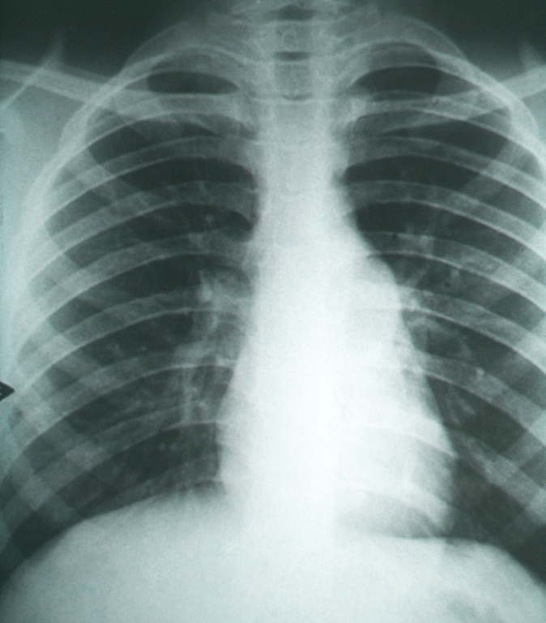
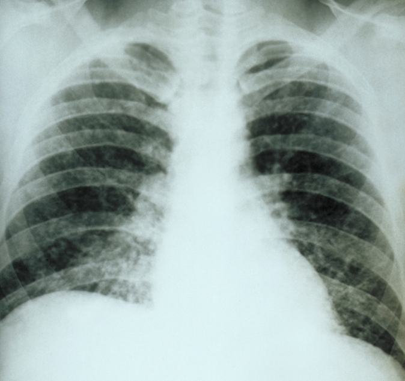
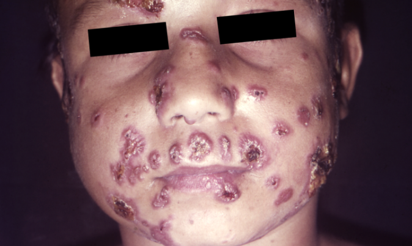

Aula 3
Micoses sistêmicas
As micoses sistêmicas são doenças invasivas causadas por fungos patogênicos de porta de entrada pulmonar, podendo atingir vários órgãos e sistemas, exigindo diagnóstico precoce e tratamento adequado para prevenir desfechos graves. A transmissão ocorre por inalação de estruturas fúngicas infectantes presentes no ambiente, acometendo populações vulneráveis, incluindo pacientes imunossuprimidos No Brasil, essas micoses são endêmicas e constituem um importante desafio à saúde pública. Você verá a seguir as principais micoses sistêmicas de importância clínica no nosso país.
Coccidioidomicose
A coccidioidomicose é uma micose sistêmica endêmica e restrita às Américas. No Brasil, tem importância regional, com ocorrência registrada em regiões áridas do Nordeste. Tem como porta de entrada os pulmões, sendo esse o principal órgão comprometido.
A coccidioidomicose é causada por fungos patogênicos do gênero Coccidioides, sendo as espécies de maior importância o Coccidioides immitis e o Coccidioides posadasii — esta última responsável pelos casos descritos no Brasil. Esses fungos são geofílicos, ou seja, apresentam seu ciclo de vida livre no solo, preferencialmente solos áridos de regiões endêmicas e tocas de tatus nessas regiões. São fungos dimórficos, ou seja, no ambiente ocorrem na fase filamentosa, caracterizada pela presença de hifas e artroconídios (estruturas infectantes) e, em parasitismo, convertem-se à fase leveduriforme, apresentando-se como esferas endosporulantes.
O indivíduo se infecta a partir da inalação de artroconídios presentes no ambiente. Na maior parte dos casos ocorre infecção respiratória benigna, curada espontaneamente. Quando a exposição às fontes ambientais é intensa, seja ocupacional, pelo frequente manejo do solo, bem como devido ao ato de desentocar tatus, há maior risco de infecção e progressão para infecções pulmonares mais graves.

Fotografia de uma radiografia de tórax com infiltrado pulmonar na coccidioidomicose
O período de incubação dura de uma a três semanas após a exposição às fontes de infecção. A forma mais frequente é a pulmonar primária, apresentando-se como pneumonia de evolução aguda, cuja extensão e gravidade variam sobretudo de acordo com a carga fúngica inalada. A forma pulmonar crônica ocorre quando o quadro respiratório se torna arrastado, com mais de dois meses de evolução, apresentando lesões pulmonares nodulares ou cavitárias crônicas. A forma disseminada é rara e indica progressão da doença para outros órgãos, a partir do foco primário pulmonar. A existência de linfonodomegalias mediastinais ou paratraqueais são indicativas de disseminação da doença, que pode acometer pele, sistema nervoso central e osteoarticular etc.
Na coccidioidomicose, os fatores predisponentes estão relacionados principalmente à quantidade de esporos inalada durante a exposição. Quanto à suscetibilidade, indivíduos com comorbidades como diabetes mellitus, doenças pulmonares crônicas, uso frequente de álcool ou em condição de imunossupressão apresentam risco aumentado de desenvolver pneumonia crônica. Além disso, a imunossupressão também aumenta o risco de formas disseminadas.
Criptococose
A criptococose é uma micose sistêmica invasiva, principal causa de meningoencefalite fúngica no mundo e a mais importante causa de mortalidade entre as micoses sistêmicas endêmicas em indivíduos imunossuprimidos no Brasil. Leveduras capsuladas do complexo Cryptococcus neoformans e do complexo Cryptococcus gattii são os agentes etiológicos.
Fontes ambientais do complexo Cryptococcus neoformans podem ser encontradas em regiões urbanas de todo o país, principalmente em excretas secas e envelhecidas de pombos e outras aves. O complexo Cryptococcus gattii tem como fontes reportadas madeira em decomposição, troncos ocos de árvores, restos vegetais e poeira doméstica, principalmente nas regiões Norte e Nordeste do Brasil.
A porta de entrada é pulmonar, a partir da inalação das estruturas fúngicas presentes nas fontes ambientais previamente descritas. A maior parte dos indivíduos que se infecta permanece assintomática por toda a vida. Dependendo do grau de exposição ou da condição imunológica do hospedeiro, há maior risco de adoecer.
O período de incubação é de difícil precisão. A infecção pode ocorrer anos antes do envolvimento do sistema nervoso central e de outros órgãos eventualmente acometidos. A forma pulmonar é mais comum em imunocompetentes e pode se apresentar com sintomas respiratórios e lesões pulmonares (nódulos ou massas) de evolução aguda ou subaguda. A forma disseminada, a partir do foco primário pulmonar, é mais invasiva e há o clássico neurotropismo, com presença de meningite de evolução subaguda a crônica. Outros órgãos podem ser também acometidos por disseminação, tais como pele, ossos, próstata etc.
Ressonância nuclear magnética cerebral mostrando hipertensão intracraniana na meningite criptocócica
Na criptococose, os fatores predisponentes estão relacionados tanto à exposição a fontes ambientais para infecção e ao status imune do hospedeiro. A maior parte dos casos ocorre devido à reativação de focos latentes de infecção por C. neoformans, usualmente desencadeada por condições imunossupressoras, sobretudo aids, mas também em transplantados e pacientes em tratamento com medicamentos imunossupressores. Nesses casos a doença se apresenta grave e disseminada, principalmente quando há atraso diagnóstico. Apesar de menos comum, pacientes imunocompetentes também podem apresentar criptococose por C. neoformans e C. gattii, este último levando inclusive a quadros de meningite grave.
Histoplasmose
A histoplasmose foi descrita pela primeira vez por Samuel Taylor Darling, em 1905, no Panamá, sendo atualmente uma micose sistêmica de grande importância nas Américas, com endemicidade significativa no Brasil. Tem como porta de entrada os pulmões, podendo ocasionar quadros restritos a esse órgão ou disseminados, dependendo da carga fúngica inalada e da condição imunológica do hospedeiro. Na maioria dos continentes, e também no Brasil, o agente etiológico responsável pelos casos de histoplasmose em humanos é o Histoplasma capsulatum. Casos procedentes da África são causados por Histoplasma duboisii. Recentemente foram propostas novas espécies, com base em estudos moleculares de H. capsulatum, sendo essas Histoplasma ohiense, Histoplasma mississippiense e Histoplasma suramericanum.
Esse é um fungo patogênico dimórfico, que ocorre naturalmente na fase filamentosa (infectante) em solos úmidos, ricos em matéria orgânica, principalmente compostos nitrogenados, classicamente presentes em excretas de morcegos e aves. Pode ser encontrado em troncos ocos de árvores, cavernas e construções abandonadas. Em parasitismo no hospedeiro, converte-se à fase leveduriforme.
A infecção ocorre a partir da inalação de microconídios e outros propágulos infectantes do fungo presentes nos ambientes de risco epidemiológico descritos acima. A maior parte dos indivíduos que se infecta em regiões endêmicas, permanece assintomática por toda a vida ou apresenta sintomas respiratórios leves e transitórios. Quanto maior a exposição, maior o risco de infecção e evolução para as manifestações clínicas da doença.

Histoplasmose pulmonar aguda com opacidades pulmonares difusas bilaterais, com predomínio nas regiões peri-hilares e basais, apresentando conferindo padrão miliar ou retículo-nodular difuso
O período de incubação da histoplasmose varia conforme a apresentação clínica. Na forma pulmonar aguda, quando a carga de esporos inalada é significativa, o surgimento dos sintomas ocorre geralmente de poucos dias a algumas semanas após a exposição. Nas demais apresentações clínicas, a doença decorre da reativação de focos latentes, tornando difícil determinar o momento exato da infecção.
A forma pulmonar aguda cursa com pneumonia após intensa exposição ao agente fúngico. A forma pulmonar crônica se caracteriza por sintomas respiratórios e lesões pulmonares que evoluem de forma arrastada em indivíduos com doença pulmonar de base, principalmente doença pulmonar obstrutiva crônica. As formas progressivas se caracterizam por disseminação da doença a partir do foco pulmonar e podem se apresentar com sinais e sintomas agudos, subagudos e crônicos, a depender da condição imunológica do hospedeiro. A forma disseminada aguda é invasiva, atingindo fígado, baço, medula óssea, pele, entre outros, com elevadas taxas de mortalidade.
Os fatores predisponentes da histoplasmose estão relacionados principalmente ao nível de exposição às fontes ambientais de infecção. Quanto maior a carga de esporos inalada, maior o risco de infecção e posterior adoecimento, não sendo necessária a presença de comorbidades ou outros fatores predisponentes para que a doença se manifeste. Por outro lado, a reativação de focos latentes, decorrente de infecções pregressas, ocorre geralmente em condições de imunossupressão.
Como o agente etiológico é patogênico, qualquer indivíduo exposto às fontes ambientais para infecção está sob risco. O comprometimento do sistema imunológico celular (aids principalmente, transplantes e uso de terapias imunossupressoras) confere maior suscetibilidade a formas disseminadas graves da doença.
Paracoccidioidomicose
A paracoccidioidomicose (PCM) foi descrita pela primeira vez em 1908 por Adolpho Lutz, em São Paulo. É uma das micoses endêmicas recorrentes no Brasil e na América Latina, sendo restrita a essa região. Trata-se de uma micose sistêmica, de porta de entrada pulmonar. A partir do foco primário pulmonar, o indivíduo pode controlar a infecção, permanecendo assintomático por toda a vida ou evoluir para a doença, apresentando sinais e sintomas relacionados à disseminação do agente fúngico. O termo “blastomicose sul-americana” ainda é muito utilizado como sinônimo da PCM, porém representa nomenclatura incorreta, sendo seu uso não recomendado.
Fungos patogênicos do gênero Paracoccidioides são os agentes etiológicos. As espécies atualmente descritas, de importância clínica no Brasil, são Paracoccidioides brasiliensis, Paracoccidioides lutzii e Paracoccidioides americana. A primeira espécie tem ampla distribuição no território nacional, ao passo que P. lutzii se concentra nas regiões Centro-Oeste e Amazônica e P. americana na região Sudeste do país.
São fungos dimórficos, ou seja, ocorrem naturalmente na fase filamentosa (infectante) no solo de regiões endêmicas e se convertem à fase leveduriforme (parasitária) no hospedeiro de sangue quente. O nicho ecológico exato desse agente fúngico ainda não foi completamente elucidado, embora haja diversos trabalhos relacionando-o a tocas de tatu, bem como a preferência por regiões úmidas, com média a alta pluviosidade, temperaturas amenas, presença de rios e florestas.
A infecção ocorre a partir da inalação de conídios, fragmentos de hifas e outros propágulos infectantes do fungo presentes no ambiente, usualmente após atividades de revolvimento e dispersão do solo, tais como trabalho agrícola, desmatamento, construção civil e caça de animais silvestres (especialmente o hábito de desentocar tatus).
Na maior parte dos casos, os sinais e sintomas da doença se apresentam após longo período de latência, que varia de muitos anos a décadas. Período de incubação mais curto, com poucos meses de evolução, ocorre na forma aguda da doença.
Existem dois tipos principais: a forma crônica (tipo adulto), clássica, acomete principalmente os pulmões e mucosas das vias aerodigestivas superiores de homens de meia-idade, tabagistas, que exercem atividades de risco epidemiológico; e a forma aguda/subaguda (tipo juvenil), que acomete crianças e jovens suscetíveis geneticamente ou pacientes imunossuprimidos. Essa forma é mais grave e invasiva, com envolvimento principalmente de linfonodos, pele, fígado e baço.

Paracoccidioidomicose. Observam-se múltiplas lesões cutâneas polimórficas acometendo a face, com predomínio em região perioral, perinasal, malar e frontal. As lesões apresentam-se como pápulas e nódulos eritematosos, alguns com centro ulcerado, crosta sero-hemorrágica e bordas elevadas, conferindo aspecto umbilicado em parte delas. Nota-se distribuição difusa e bilateral, com tendência à confluência em áreas centrais da face
Na paracoccidioidomicose, a maior parte dos casos está associada a perfil laboral, envolvendo atividades com risco epidemiológico para infecção. O tabagismo também aumenta o risco de infecção. O sexo masculino é mais frequentemente acometido, não apenas pela maior exposição ocupacional, mas também porque as mulheres possuem o fator protetor hormonal do estradiol, que reduz a conversão do fungo da fase infectante para a fase parasitária.
Os fungos do gênero Paracoccidioides são patógenos primários, de modo que qualquer indivíduo exposto às fontes ambientais de infecção em regiões endêmicas é suscetível. Não é necessária a presença de condições imunossupressoras para o desenvolvimento da doença; entretanto, quando presentes, essas condições podem resultar em quadros mais graves e disseminados, com comportamento oportunista. Pacientes jovens que apresentam a forma aguda da PCM apresentam suscetibilidade genética ao antígeno de Paracoccidioides, o que explica o surgimento de casos mais graves e invasivos, sem predileção por sexo ou associação evidente com atividades de risco epidemiológico.